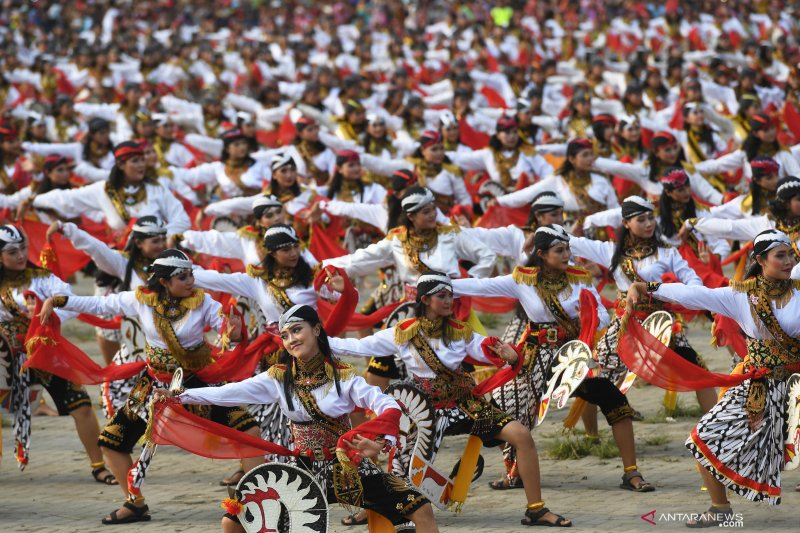
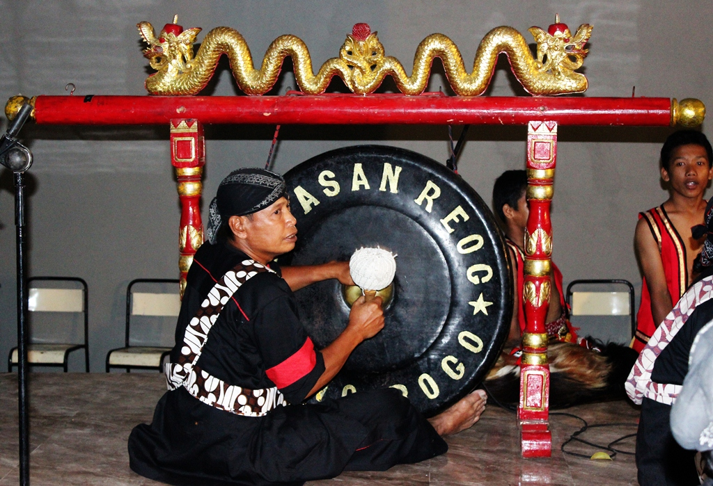
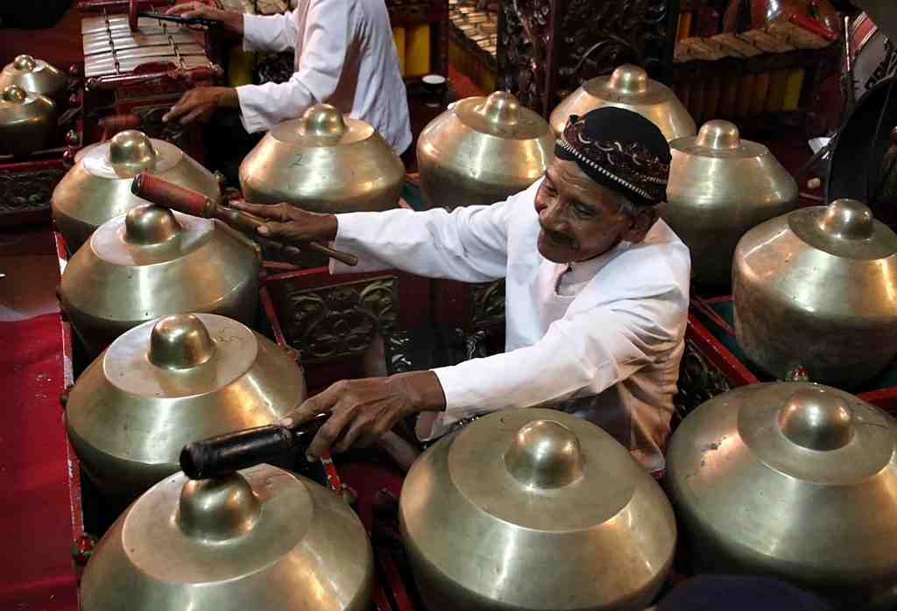
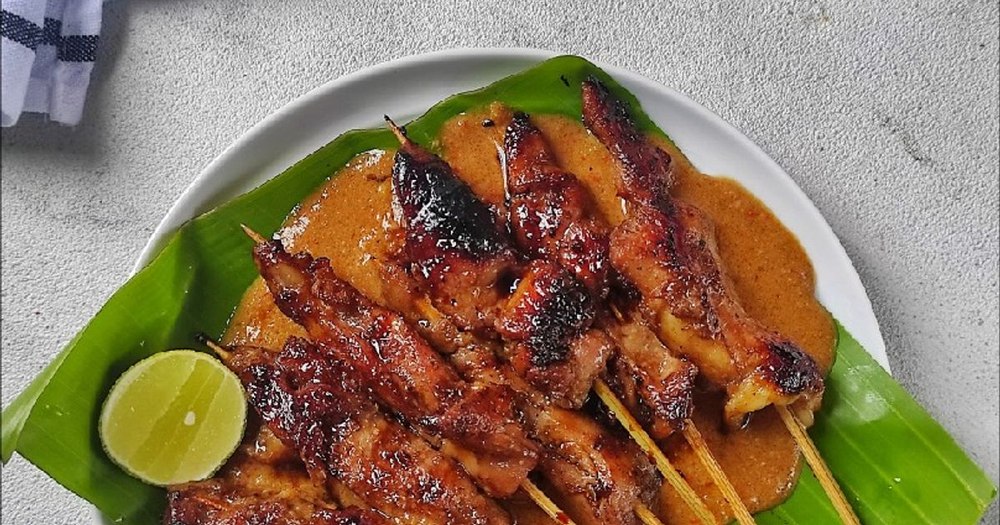
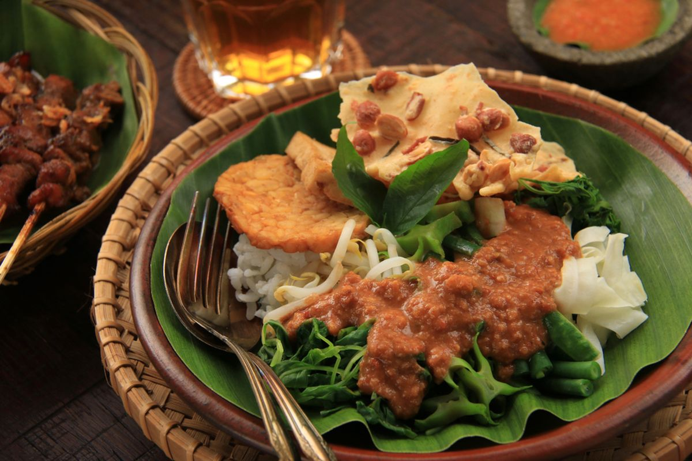
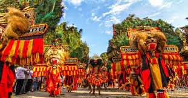
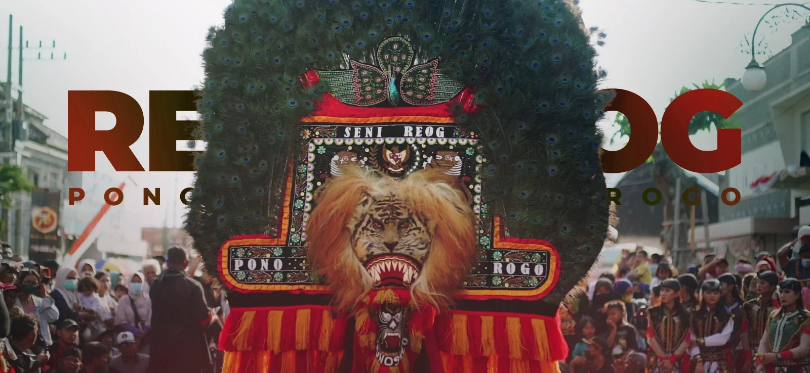

Selamat Datang di Budaya Ponorogo
Jelajahi kekayaan budaya Ponorogo melalui seni tari, musik, kuliner, kerajinan, wisata, festival, dan galeri foto.
Sejarah Ponorogo
Asal Usul
Ponorogo berasal dari kata "Pana Rogo" yang berarti api yang menyala-nyala, merujuk pada semangat dan keberanian masyarakatnya.
Perkembangan
Kabupaten Ponorogo telah berkembang dari masa kerajaan hingga menjadi pusat budaya dan ekonomi di Jawa Timur.
Tokoh Terkenal
Ponorogo melahirkan tokoh-tokoh penting seperti Ki Ageng Suryomentaram dan seniman-seniman terkemuka.
Seni Tari
Tari Reog
Tari Reog adalah tarian tradisional Ponorogo yang melambangkan keberanian dan kekuatan. Penari menggunakan topeng besar yang berat, menunjukkan semangat juang masyarakat Ponorogo.

Tari Jaranan
Tari Jaranan adalah tarian yang menggambarkan penunggang kuda yang berani. Tarian ini sering ditampilkan dalam acara adat dan festival budaya.

Seni Musik
Gamelan Ponorogo
Gamelan adalah ansambel musik tradisional Jawa yang menggunakan berbagai instrumen perkusi. Di Ponorogo, gamelan digunakan dalam upacara adat dan pertunjukan seni.

Kenong
Kenong adalah instrumen musik pukul yang menghasilkan nada rendah dan dalam. Instrumen ini merupakan bagian penting dari ansambel gamelan Ponorogo.

Kuliner
Sate Ayam Ponorogo
Sate ayam adalah kuliner khas Ponorogo yang terbuat dari daging ayam yang ditusuk dan dibakar dengan bumbu kacang. Rasanya gurih dan lezat, menjadi favorit wisatawan.

Nasi Pecel Ponorogo
Nasi pecel adalah makanan tradisional dengan nasi putih, sayuran rebus, dan bumbu kacang yang khas. Makanan ini sederhana namun kaya nutrisi dan rasa.

Kerajinan
Anyaman Bambu
Kerajinan anyaman bambu Ponorogo terkenal dengan kehalusan dan kekuatannya, digunakan untuk berbagai keperluan rumah tangga.

Ukiran Kayu
Ukiran kayu dengan motif tradisional Ponorogo sering digunakan untuk hiasan rumah dan souvenir.

Merak Nogo
Merak Nogo adalah kerajinan khas Ponorogo yang melambangkan keindahan dan keberanian.

Wisata Ponorogo
Gunung Wilis
Gunung Wilis adalah gunung berapi yang menjadi ikon Ponorogo, menawarkan pemandangan indah dan jalur pendakian.
Museum Reog
Museum khusus Reog yang menyimpan koleksi artefak dan sejarah tarian Reog Ponorogo.
Air Terjun Nglirip
Air terjun indah di kaki Gunung Wilis yang menjadi destinasi wisata alam favorit.
Festival Budaya
Festival Reog
Festival tahunan yang menampilkan pertunjukan Reog dari berbagai daerah dengan skala besar.
Festival Kecak
Festival musik dan tarian tradisional yang menghadirkan harmoni gamelan dan kenong.
Festival Kuliner
Acara yang memamerkan berbagai kuliner khas Ponorogo dan kompetisi masak tradisional.
Galeri Foto
Jelajahi koleksi foto budaya Ponorogo yang memukau

Quiz Budaya Ponorogo
Seberapa baik Anda mengenal budaya Ponorogo? Uji pengetahuan Anda sekarang!